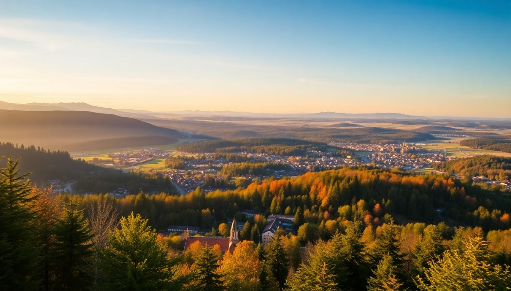

Best Time to Visit Germany’s Black Forest: A Seasonal Guide

I’ve driven the B500 through the Black Forest in every season, and honestly, there’s no single perfect month—just the right one for what you want to do. This guide breaks down what each season actually delivers in Freiburg, Baden-Baden, and Triberg, so you can pick your dates with confidence.
What makes spring (April–June) a good time to visit?
Spring is when the Black Forest shakes off its winter chill. The hills around Freiburg turn a deep green, and the cherry blossoms in the Kaiserstuhl wine region hit peak bloom by late April. Crowds are thin, and hotel prices in Baden-Baden’s Lichtentaler Allee area are noticeably lower than in summer.
- Freiburg’s Münsterplatz market runs daily, and the asparagus season (Spargelzeit) starts in mid-April. Grab a white asparagus plate at Martin’s Bräu near the cathedral.
- Baden-Baden’s Friedrichsbad Roman-Irish bathhouse feels better in cool weather—you’ll actually want that soak after a rainy hike up the Merkur mountain.
- Triberg’s waterfalls are roaring from snowmelt in May, but the town itself is quiet. The Schwarzwaldmuseum is a solid rainy-day backup.
The catch: many mountain huts (like those on the Westweg trail) don’t open until late May, and the weather can be wet. Pack a good jacket.
Is summer (July–August) overcrowded?
Yes, in the tourist hubs. But if you plan around the crowds, summer is the most reliable season for hiking and outdoor eating. I’ve done the Schluchsee loop trail in July, and the lake was warm enough for a swim afterward—something you can’t do in any other season.
- Freiburg’s Schlossberg offers evening views over the city, and the Bächle (little water channels) in the Altstadt keep the streets cool. Eat at Kagan on the Münsterplatz for solid Turkish-German fusion.
- Baden-Baden fills up with spa tourists. Book the Caracalla Therme at 8 a.m. to skip the line. The Lichtentaler Allee park is lovely but packed by noon.
- Triberg is a tourist trap in July—the cuckoo clock shops on the main street are overpriced. Skip the House of 1000 Clocks and drive 20 minutes to Schonach for the World’s Largest Cuckoo Clock instead.
Summer also means festivals: Freiburg’s Zelt-Musik-Festival in July is worth a detour. Just know that accommodation in Freiburg’s Wiehre neighborhood books out months ahead.
What about autumn (September–October) for fewer crowds?
Autumn is my personal favorite. The crowds thin after September 15, the foliage turns gold and red along the B500 (the Schwarzwaldhochstraße), and the wine harvest kicks off in the Ortenau region around Offenburg. You’ll still get sunny days, but evenings are chilly.
- Freiburg’s September wine festival on the Münsterplatz is a must. Try a glass of Gutedel (local white wine) from Weingut Ziereisen.
- Baden-Baden in October is sleepy but elegant. The Kurhaus casino is less crowded, and the Brennnessel restaurant serves excellent seasonal game dishes.
- Triberg’s main appeal in autumn is the Bergsee hike—the water is cold, but the trail is nearly empty. The Triberg Waterfalls are still flowing strong through October.
One warning: many hotels and restaurants in smaller towns like Gengenbach close for a week in late October or early November. Always check ahead.
Should you visit in winter (November–March)?
Only if you want snow and Christmas markets. November is the worst month—gray, wet, and most tourist attractions operate on reduced hours. But December through February transforms the Black Forest into a winter wonderland, especially above 600 meters.
- Freiburg’s Christmas market on the Münsterplatz runs from late November to December 23. It’s smaller than Nuremberg’s but more authentic. The mulled wine (Glühwein) at Stand 47 near the cathedral is the best.
- Baden-Baden hosts a festive market at the Kurhaus, and the Brenner’s Park Hotel does a high-end Christmas brunch. Book the Friedrichsbad for a post-ski soak.
- Triberg is the snowiest of the three. The Sommerberg ski lift runs for sledding and beginner skiing. The Triberg Waterfalls partially freeze, which is a rare sight.
Winter hiking is possible on groomed trails like the Höhenweg near Baiersbronn, but you’ll need spikes. Driving the B500 can be treacherous after snow—stick to the main roads.
What’s the best month for hiking specifically?
June and September. Both offer stable weather, long daylight, and manageable trail conditions. The Westweg trail (the classic long-distance route) is fully open by June, and the Feldberg peak has clear views without summer haze.
- Freiburg’s Schauinsland cable car runs year-round, but the hiking trails from the top station are best in June when wildflowers bloom.
- Baden-Baden’s Gernsbach loop trail is a 12-km moderate hike with views over the Murg valley. September mornings are crisp.
- Triberg’s Gutach waterfall circuit is short (2 km) but steep—do it in June to avoid the August queue.
Avoid July and August for long hikes unless you start before 7 a.m. The heat and tourist density on the Feldberg summit make it less enjoyable.
Which season is cheapest for accommodation?
Winter (excluding Christmas week) and early spring (March–April). I’ve stayed at Hotel zum Löwen in Triberg for €65/night in March—half the summer rate. In Freiburg, the Hotel am Rathaus near the Altstadt drops to €80 in February.
- Baden-Baden’s luxury hotels like Brenner’s Park have off-season packages in November that include spa access. The Hotel am Markt in Freiburg’s center is a reliable budget pick.
- Triberg’s Parkhotel Wehrle offers a winter special with dinner included—worth it if you’re there for sledding.
- Gengenbach’s Hotel Die Krone is a historic option that’s 30% cheaper in March than August.
The trade-off: shorter days and some restaurants close on Mondays or Tuesdays in the off-season. Call ahead.
FAQ
When is the best time to see the Black Forest waterfalls at their peak? Late April to early June, after snowmelt. The Triberg Waterfalls and Todtnau Waterfalls both reach maximum flow in May. By August, they’re reduced to a trickle in dry years.
Is the Black Forest worth visiting in November? Only if you’re combining it with a Christmas market trip starting late November. The first three weeks of November are gray, damp, and many hiking huts are closed. Stick to Baden-Baden’s spas and Freiburg’s indoor museums like the Augustinermuseum.
Do I need a car to visit the Black Forest? Yes, for Triberg and smaller towns. Freiburg has good train connections via the Breisgau S-Bahn, and Baden-Baden has an ICE station. But to reach the B500 viewpoints or the Mummelsee, you’ll want a rental. The Schwarzwald-Ticket (€25/day) covers regional trains.
Conclusion
- Spring (April–June): Best for wildflowers, thin crowds, and lower prices. Expect rain.
- Summer (July–August): Reliable hiking weather but packed in Freiburg and Triberg. Book everything early.
- Autumn (September–October): My pick for foliage, wine festivals, and comfortable hiking. Most attractions stay open.
- Winter (December–February): Snow in Triberg, Christmas markets in Freiburg and Baden-Baden. November is a skip.
- For hiking: June or September. For cheap stays: March or November (except Christmas).
- For waterfalls: May. For cuckoo clocks: skip the tourist shops in Triberg and drive to Schonach instead.